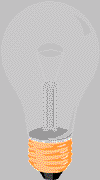

5.เทคนิคที่ใช้เพื่อดูเวลา และวันที่
6.เทคนิคเปลี่ยนเนื้อหา (Element) ของเวลาและวันที่ให้เป็นคำทักทายโดยใช้ Element เดียวกัน
7.เทคนิคการนับค่าจำนวนอาเรยใหม่ที่เพิ่มขึ้น
8.เทคนิคการเรียงลำดับค่าอาเรย์จากน้อยไปหามาก
9.เทคนิคการเปลี่ยนขนาดตัวอักษร
เทคนิค
เปลี่ยนขนาดตัวอักษร
คลิกปุ่มเพื่อเปลี่ยนขนาด
10.เทคนิคการเปลี่ยนสิของรูปภาพ
JavaScript สามารถเปลี่ยนแอตทริบิวต์ HTML ได้
ในกรณีนี้ JavaScript จะเปลี่ยนแอตทริบิวต์ src (source) ของรูปภาพ.
